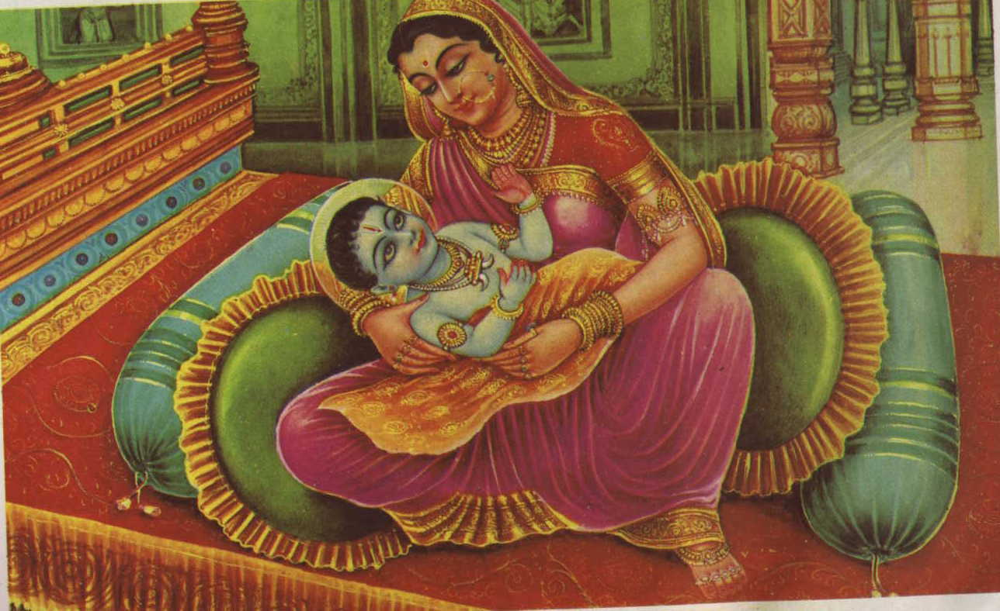
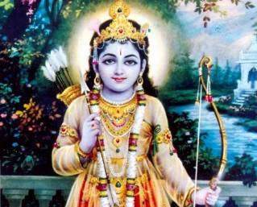

 |
 |
King Dasharatha of the solar dynasty was an able ruler of the kingdom of ayodhya.He had a queen named Kaushalya through which dasharatha had a girl named 'shantha' on account of her peacefulness.But that did not make dasharatha happy as he wanted a son.So, dasharatha decided to marry again and hence approached king Ashwapathi of Kekaya to ask for her daughter Kaikeyi's hand in marriage.
To this ashwapathi replied ,"Kaushalya is already your wife and has given you a daughter ,if my daughter marries you she will just be a junior queen".To this dasharatha said,"If your daughter gives me a son,he will be King and she will be the queen-mother.Ashwapathi accepted to the marriage.
To dasharatha's dismay,kaikeyi neither bore him a son or a daughter.So dasharatha married once again a woman named Sumitra.She too failed to produce an heir to dasharatha.Dasharatha started worrying about who would he pass on the crown to?.That is when King Rompada of anga came to hima and said ,"My Kingdom is struct with drought because Lord Indra is afraid of one of his subjects,Rishyasringa,son of vibhandaka a mighty hermit.The king was sure that the same rishyashringa who causes drought in his kingdom is responsible for dasharatha's childlessness.Well,rompada thought so because at that time rains were compared to fertility.
So,why was indra afraid of rishyashringa?Well,because of his penance power.None of indra's apsaras were able to disrupt his penance.As a matter of fact any woman who went near his hut burnt to ashes.Furiated by this indra was not causing rains in anga.Now,what rompada thought to do was to offer a beautiful bride to rishyashringa and make him a householder thus pleasing indra and to cause rains and eradicate drought in his kingdom.
But the problem was no woman was ready to wed him because they all turned to ashes.So,rompada said to dasharatha,"Let me adopt your daughter as mine.If shantha succeeds in making him a householder,i will see to it that you will have sons.Suddenly,the daughter was the answer to dasharatha's problem".
So daily shantha would try to get rishyashringa's attention and after a number of attempts rishyashringa could not control himself,for shantha was one beautiful woman.He offered himself totally to shantha.And shantha returned triumphant to anga with rishyashringa.Indra was pleased and then came the rains and everything was once again pleasant in anga.
Then,rompada asked rishyashringa to help dasharatha beget sons.He readily agreed and performed a yagna and satisfied all the gods.The gods in return gave a potion,which when consumed by a woman could beget her a son.
Dasharatha gave half the potion to Kaushalya and half to Kaikeyi.But kaushalya and kaikeyi gave half of their share each to sumitra because they considered themselves equal.Thus Kausalya bore a son named 'Rama'.Kaikeyi bore Bharath.Sumitra gave birth to lakshman and shatrughna.
Thus, a daughter who brought no happiness to a king finally became his reason for his happiness.